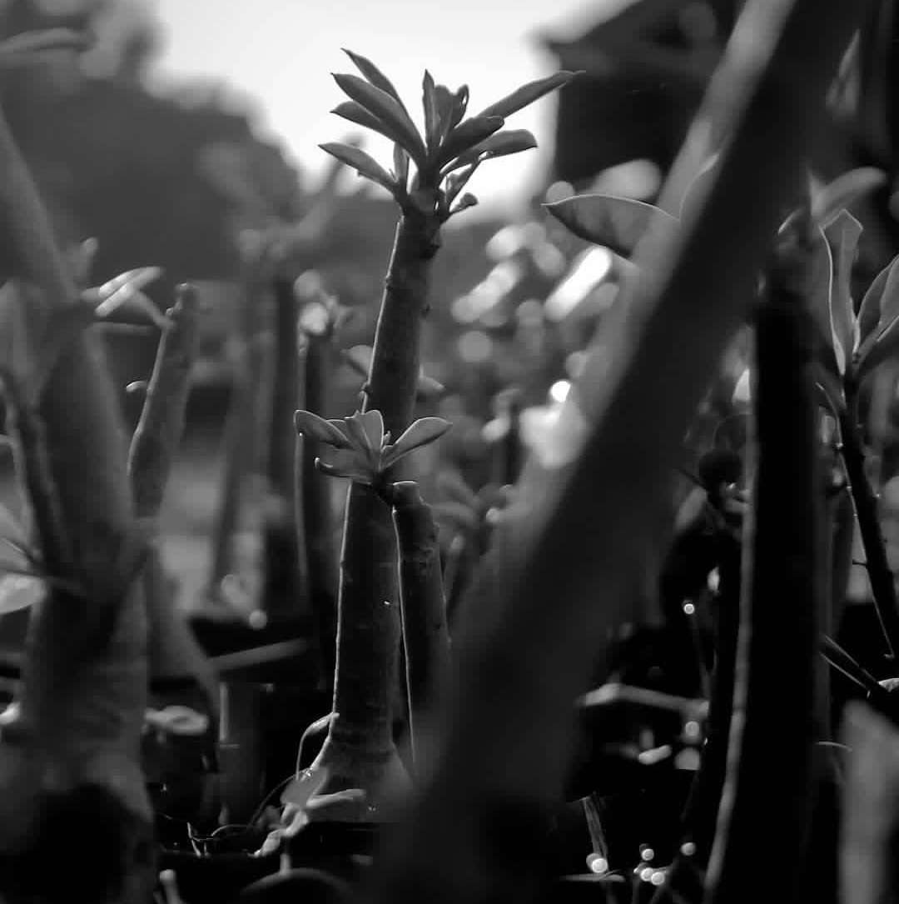
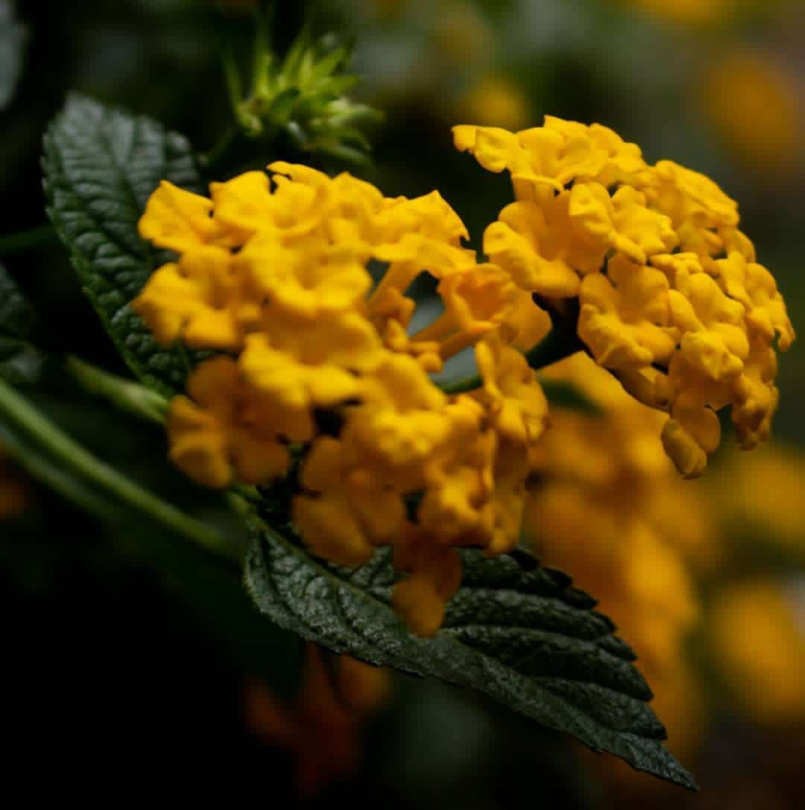
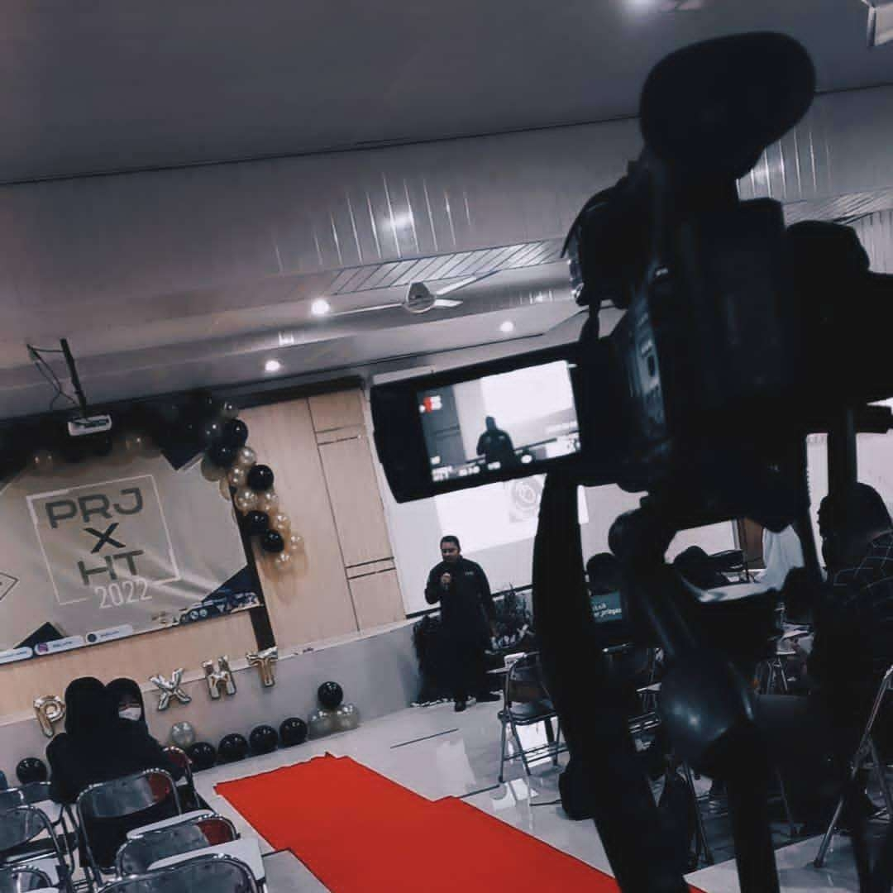
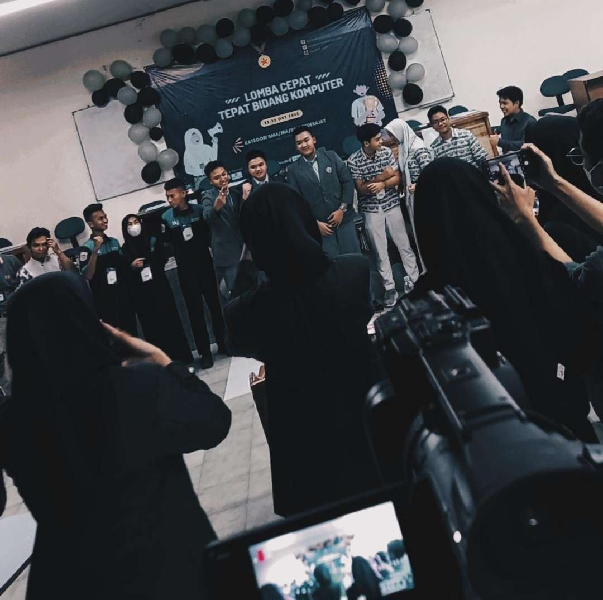
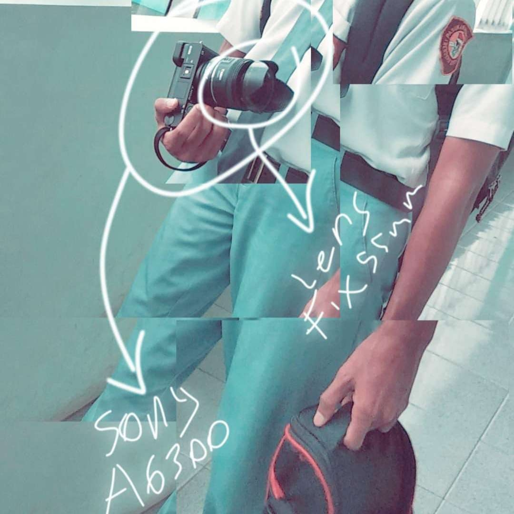

Diambil dengan kamera Canon dengan focal length 55mm dari jarak 2 meter.

Diambil dengan kamera Canon dengan focal length 55mm dari jarak 5cm.

Diambil dengan kamera Canon dengan focal length 55mm dari jarak 2cm.

Sosialisasi yang dilakukan oleh pihak sponsor pada PRJ 2022.

Pemenang pada ajang LCT di PRJ 2022.

Salah satu kamera yang digunakan untuk mengambil foto dan video, Sony A6300 dengan lensa fix 55mm.